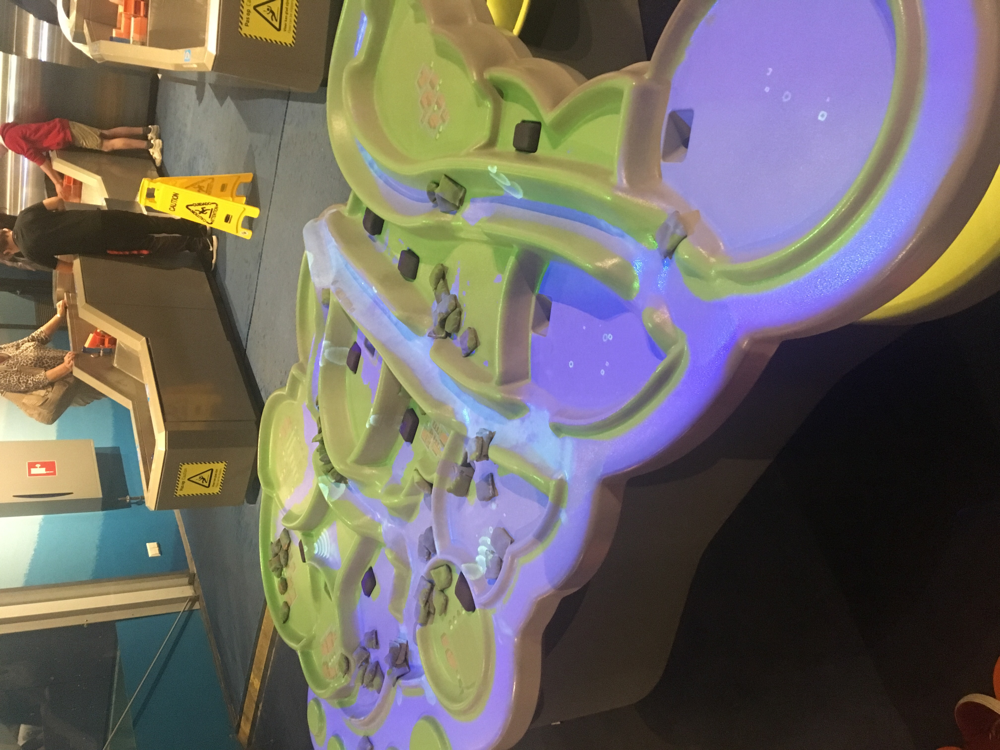
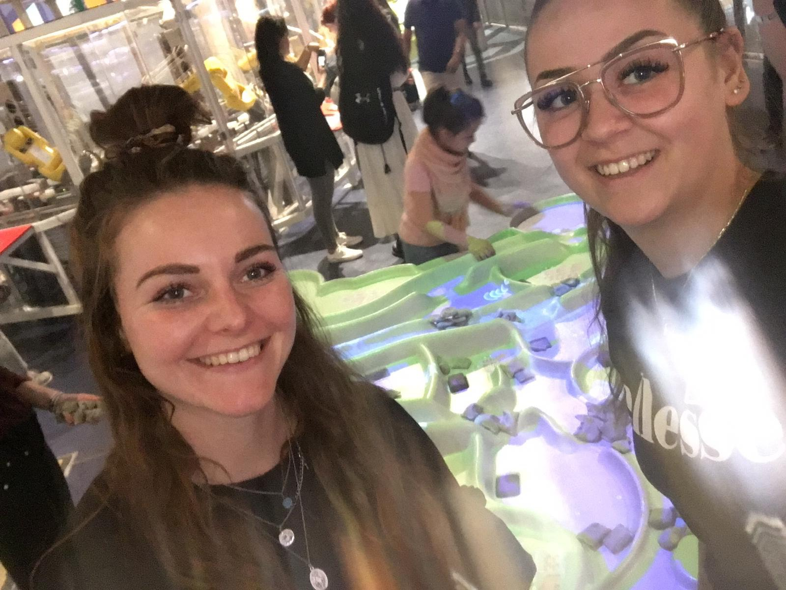

NEMO Science museum
Op maandag 27 mei gingen we naar het NEMO Science museum in Amsterdam. Als kind ben ik hier wel eens geweest en ik weet nog goed dat Nemo een grote indruk op me achter heeft gelaten. Ik vond het dan ook erg leuk dat we hierheen gingen als excursie, nu met de kennis die ik heb opgedaan tijdens de hoorcollege en mijn eigen research over de verschillende topics van HCI.
Assignment
Tussen alle grote speel installaties zoals de ‘Ballen fabriek machine’ en het grote interactieve spel waarmee je de aarde kon beschermen, stond de installatie die ik het meest interessant vond in de technische zin namelijk ‘Strijd tegen water’.  Het doel van deze installatie is het stromende water van de rivieren en plassen te besturen. Door zandzakjes en pompjes te verplaatsen kan je de rivieren en plassen laten stromen zoals jij wilt, en dus de dorpjes en polders veilig stellen van overstromingen of juist helemaal laten overstromen. De strijd tegen het water kan door een persoon worden bespeeld maar wanneer de speler zo snel mogelijk de dorpjes en de polders wilt veiligstellen of juist vol wilt laten stromen, zal dit het nog leuker en en beter gaan wanneer bezoekers samen spelen. De installatie is een kaart van een stuk landschap wat Nederland representeert waar dorpjes en landbouwgebieden worden omringd door het vele water wat door het landschap stroomt. De kaart bestaat uit onregelmatige oppervlakte. Dit maakt het mogelijk maken om rivieren, dijken en plassen weer te geven en de verbeelding te creëren dat het water een bepaalde kant op stroomt. De installatie werkt met motion capture projection mapping, en maakt gebruik van de infrarood meter om zo bewegingen te meten . boven de installatie hangt een beamer die de kaart echt tot leven brengt en het water laat stromen. Ook herkent de beamer wanneer er veranderingen plaats vindt op bepaalde punten, (de lekken van de rivieren) en waarna er vervolgens een ander beeld wordt geprojecteerd op de kaart. Deze installatie vond ik het meest interessant om verschillende redenen. De eerste reden is projection mapping, ik vind heel projection mapping heel tof hoe het wordt ingezet, hoe de techniek werkt en hoe je mensen zo makkelijk meeneemt in het tot leven brengen van een statisch object. Ten tweede heb ik voor deze installatie gekozen omdat de installatie gebruikers motiveert om samen te werken doordat dat het nog leuker wordt wanneer je samenwerkt. De derde en laatste reden waarom ik voor deze installatie heb gekozen tussen al die anderen gave en interessante installaties in NEMO is omdat het werkt onder de gebruikers. Hiermee bedoel ik dat je met een blik op de installatie je direct weet wat er moet gebeuren om met de installatie aan de slag te gaan. Je ziet vaak genoeg dat er installaties zijn waarbij dit niet zo is, en je eerst maar wat moet proberen en als dit dan niet lukt mensen afhaken. Ik kan me hier soms aan ergeren omdat het echt zonde is en ik me dan ook afvraag of er genoeg usability testen zijn uitgevoerd met de juiste mensen. Ik kon namelijk zien dat het niet werkt. En dat is toch heel erg zonde, een gaaf idee bedenken maar het nietg genoeg testen uitvoeren.
Reflect
 Ook al viel ik niet onder de doelgroep van het museum, ik heb mij erg vermaakt tijdens de excursie in NEMO. Ik vond het erg interessant om er met verschillende ogen naar het museum te kijken; aan de ene kant als een reguliere bezoeker en aan de andere kant met de kennis die ik heb opgedaan de afgelopen weken. Wat ik erg leuk vond om te zien dat je kon zien dat de kinderen die NEMO bezochten,echt in een walhalla bevonden en alles wilde uitproberen.